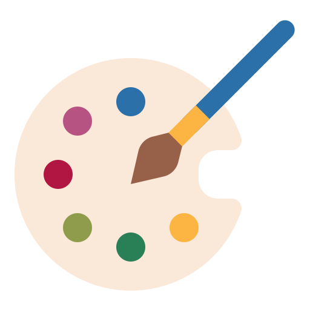

{% include 'website/navmenu.html' %}

GENERAL CULTURAL NEWS
BBC news
立場新聞
New York Times
Hyperallegic
View RSS feed
View RSS feed
View RSS feed
View RSS feed
VISUAL ART
Colossal
Street Art News
Hi-Fructose Magazine
ARTnews Magazine
View RSS feed
View RSS feed
View RSS feed
View RSS feed
PERFORMANCE ART
American Theatre
BBC Music
Variety
New York Times
View RSS feed
View RSS feed
View RSS feed
View RSS feed
Tweets by artsy
Tweets by DeviantArt
Tweets by TheAcademy
Tweets by culturemonster
Tweets by ArtReview_